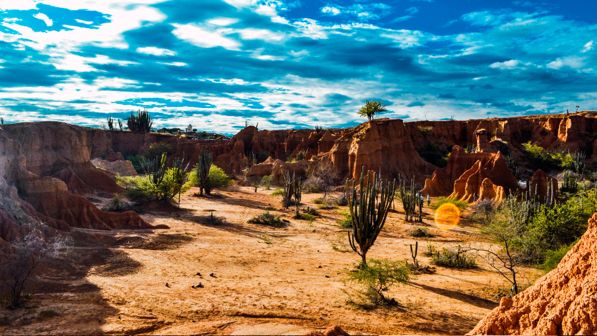

Caatinga

A Caatinga é um bioma exclusivamente brasileiro, ocupando, aproximadamente, uma área de 734.478 km2, que
corresponde a cerca de 70% da região Nordeste e 11% do território nacional. O nome “Caatinga” possui origem
tupi-guarani e significa “floresta branca”. Essa denominação representa as características da vegetação desse
ecossistema, cujas folhas caem no período da seca.
Características da Caatinga
A Caatinga apresenta diversas particularidades, principalmente em relação à adaptação climática das plantas
e dos animais.
Esse bioma é afetado por secas extremas e por períodos de estiagem, característicos do clima
semiárido. Por essa razão, a vegetação precisou desenvolver mecanismos de sobrevivência em razão da pouca
disponibilidade de água. A fauna é bastante diversificada e também é marcada
pelas adaptações ao clima, como as recorrentes migrações nos períodos de estiagem.
Localização da Caatinga
A Caatinga localiza-se na região Nordeste do Brasil e compreende os seguintes estados: Paraíba, Rio Grande
do Norte, Piauí, Maranhão, Alagoas, Pernambuco, Sergipe e Bahia. Também ocorre em algumas faixas da região
Sudeste que ficam ao norte do estado de Minas Gerais.
Clima da Caatinga
O clima que compreende a região da Caatinga é o clima tropical semiárido. Esse clima é marcado por longos
períodos de estiagem, isto é, sem chuvas. O índice pluviométrico é abaixo dos 800 mm/ano. As temperaturas
são geralmente elevadas, com uma média de 27 ºC, podendo alcançar números maiores, superiores a 32 ºC.
Durante o período de chuva, os índices pluviométricos podem atingir os 1000 mm/ano.
Já nos períodos mais secos, há uma baixa, chegando a 200 mm/ano.
Vegetação da Caatinga
A vegetação da Caatinga apresenta características de adaptação ao longo período de seca e grande diversidade de
espécies vegetais, muitas delas endêmicas (desenvolvem-se apenas nessa região). A vegetação da Caatinga
apresenta três estratos:
• arbóreo: com espécies que variam entre 8 e 12 metros de altura;
• arbustivo: com espécies que variam entre 2 e 5 metros de altura;
• herbáceo: com espécies com altura abaixo de 2 metros.
As principais características da vegetação da Caatinga é a presença de árvores baixas,
troncos tortuosos e que apresentam espinhos e folhas que caem no período da seca (com exceção de algumas
espécies, como o juazeiro). O cair das folhas é um mecanismo para evitar a perda excessiva de água e também
diminuir a ocorrência de processos fotossintéticos para que as plantas entrem em estágio de economia de energia.
Outra característica marcante é que as raízes das plantas cobrem o solo para que seja possível armazenar água
durante o período de chuva. Algumas espécies de cactáceas, como o mandacaru, apresentam uma característica
peculiar: suas folhas são
modificadas em espinhos para evitar que a planta perca água pelo processo de transpiração. Os espinhos são
também um mecanismo de defesa dessas plantas a fim de evitar que animais alimentem-se delas.
Vale dizer também que os cactos, que compõem a formação vegetal desse bioma, apresentam grande capacidade de
armazenamento de água. Há também plantas que apresentam em suas folhas uma espécie de cera para evitar a perda
de água.
Outra característica marcante das espécies vegetais encontradas na Caatinga é a capacidade de algumas plantas de
realizar fotossíntese e de produzir nutrientes mesmo que não apresentem folhas. Isso se deve ao fato de que
essas espécies possuem caule verde com células constituídas por clorofila, que é o pigmento responsável por
captar a luz e garantir que organismos consigam produzir seu alimento por meio da fotossíntese.
Destacam-se na Caatinga as seguintes espécies de vegetação:
bromélias
xique-xique
mandacaru
embiratanha
acácia
juazeiro
macambira
maniçoba
umbu
mimosa
Flora da Caatinga
A flora da Caatinga é bastante diversificada. O período de floração varia conforme a região, o regime de chuvas
e a
qualidade dos solos. Segundo a Embrapa, a Caatinga apresenta cerca de 1.981 espécies de plantas. Destacam-se os
cactos, como o mandacaru e o xique-xique; as bromélias, como a macambira; e as leguminosas, como a catingueira.
Características de algumas espécies da flora da Caatinga
• Cumaru: espécie de planta adaptada à maior parte dos solos, especialmente aos solos arenosos e profundos.
Apresenta caules que soltam lascas finas, deixando à mostra a camada mais nova, que possui coloração verde. Essa
espécie corre risco de ser extinta devido à grande exploração.
• Ipê-roxo: espécie de planta cujo nome representa a coloração das suas flores. Durante a sua floração, a planta
perde as folhas, ficando em destaque as flores, que formam densos buquês. Devido à grande procura dessa espécie
para
ornamentação, dada a sua exuberância, está ameaçada de extinção.
• Juazeiro: espécie de planta cujas folhas permanecem verdes no período de seca por ter raízes que captam
umidade no subsolo. É uma das poucas espécies que
não perdem suas folhas durante a estiagem. Pode atingir até 16 metros.
• Macambira: espécie de bromélia que se desenvolve sob a exposição do sol. Apresenta folhas suculentas, que são
utilizadas para alimentação de gado e também para produção de farinha e pirão. Seu talo é bastante utilizado
para
revestir telhados.
Fauna da Caatinga
A fauna da Caatinga é bastante diversificada, mas não tão conhecida, havendo diversas espécies de animais
endêmicos.
Os animais que se encontram na região abrangida por esse bioma apresentam características de adaptação ao clima,
assim como as plantas, como o desenvolvimento de hábitos noturnos,
comportamentos migratórios e “hibernações” (capacidade de algumas espécies de lidar com condições climáticas
hostis).
Segundo o Ministério do Meio Ambiente, a Caatinga apresenta:
• 178 espécies de mamíferos;
• 591 espécies de aves;
• 117 espécies de répteis;
• 79 espécies de anfíbios;
• 241 espécies de peixes;
• 221 espécies de abelhas.
Dos animais encontrados nesse bioma, destacam-se:
ararinha-azul
sapo-cururu
onça-parda
macaco-prego
asa-branca
cotia
tatu-bola
sagui-do-nordeste
preá
tatu-peba
veado-catingueiro
sagui-do- nordeste
guigó-da-caatinga
jacaré-de-papo-amarelo
Solo da Caatinga
Segundo o Sistema Brasileiro de Classificação dos Solos, o solo da Caatinga é definido como raso a profundo. É
rico
em minérios, mas pobre em matéria orgânica, em razão das características do clima, da hidrografia e da vegetação
da
região. As texturas são arenosas e argilosas.
O mais comum nesse bioma é o solo raso e pedregoso, o que dificulta o armazenamento de água. As colorações
variam
entre tons avermelhados e cinzentos. Mesmo com essas características, ainda assim esse solo é utilizado para a
criação de animais.
Como principais produtos agrícolas cultivados na Caatinga, podemos citar o licuri, o
umbu, o
caju e o maracujá.
Quais são os “tipos de Caatinga”?
Falar em “tipos de Caatinga” não é adequado. O termo correto para se referir às variações paisagísticas que
existem
nesse bioma é fitofisionomias da Caatinga. São fitofisionomias da Caatinga:
• Caatinga arbórea: composta por florestas que apresentam árvores que podem atingir até 20 metros de altura.
• Caatinga arbustiva: composta por árvores baixas com até 8 metros de altura, como o xique-xique e a macambira.
• Mata seca: composta por florestas situadas próximo de encostas e de topos de serras. As folhas permanecem, em
sua
maioria, no período de seca.
• Carrasco: composto por arbustos de caules finos e tortuosos. Essa fitofisionomia é típica da região oeste da
Chapada do Ibiapaba, localizada entre os estados do
Piauí e do Ceará, e do sul da Chapada do Araripe, localizada na divisa dos estados do Ceará, do Piauí e de
Pernambuco.
Hidrografia da Caatinga
A hidrografia da região compreendida pelo bioma Caatinga apresenta rios que são, em sua maioria, intermitentes
ou temporários, isto é, rios que correm apenas no período das chuvas e que secam durante a estação da seca. O
rio
perene (que apresenta água corrente o ano todo) mais conhecido desse bioma é o rio São Francisco. Os rios da
Caatinga nascem geralmente nas encostas das serras. São exemplos de rios da Caatinga:
• Rio Poti
• Rio Jaguaribe
• Rio Parnaíba
Devastação da Caatinga
A Caatinga é considerada uma das 37 regiões do planeta que devem ser conservadas, pois contribui para a
manutenção
das características climáticas locais e globais, além de apresentar grande biodiversidade. Sua preservação é
fundamental, principalmente porque esse bioma é o berço de diversas nascentes que abastecem o sertão nordestino.
A região semiárida abrangida por esse bioma é a mais povoada do mundo, sendo habitat para cerca de 28 milhões de
pessoas, que tiram do bioma os recursos necessários para a sua sobrevivência. Além da intensa exploração dos
recursos naturais, há o aumento da expansão da fronteira agrícola para viabilizar a produção agrícola e
pecuária, acarretando então o aumento do desmatamento.
Segundo o Ibama, até 2008, o desmatamento na Caatinga chegava a 45%. Dados do MapBiomas (Sistema de
Monitoramento dos Biomas do Brasil) apontam que a Caatinga perdeu aproximadamente 15
milhões de hectares entre 2000 e 2020, o equivalente a 26,36% de sua área original.